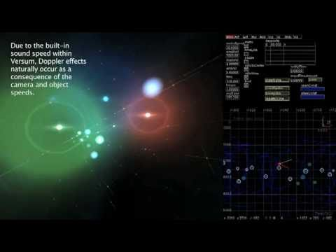
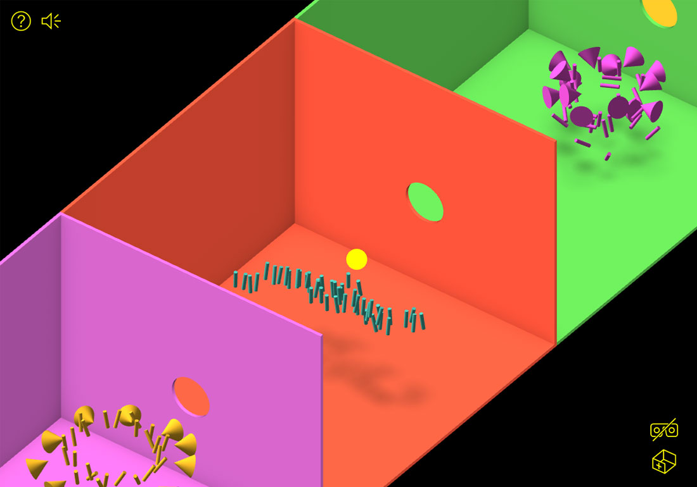

Toujours pour l’exposition Faire Corps, le visiteur est invité à devenir acteur de son environnement, de par sa présence, il crée un lieu d’apaisement totalement nouveau et propre à lui-même. C’est par cette immersion que l’exposition prend tout son sens, le spectateur est mis au centre de l’expérience et fait partie intégrante de celle-ci. En étudiant la place de l’humain au sein de l’installation, de nouvelles problématiques entrent en jeu, notamment le fait que celui-ci n’est plus là en simple spectateur, mais devient lui aussi une sorte de dispositif à part entière, qui viendra influencer et faire évoluer l’espace sonore et visuel qui l’entoure. En s’immergeant dans un nouvel espace, il se l’accapare, et interagit avec lui de manière naturelle et intuitive. En outre, Tarik Barri, avec son projet Versum1 a développé un programme de composition virtuel illustrant parfaitement l’immersion. Il s’agit d’un monde virtuel en 3D et en temps réel qui invite les spectateurs et le compositeur à regarder la musique et à écouter les visuels. Ce dispositif permet de briser les barrières entre public et compositeur, et le laisse littéralement voir comment le compositeur travaille et la façon dont la composition est construite, ainsi une grande valeur pourrait être ajoutée à l’expérience d’écoute. Cela induit une totale transparence quant aux structures de la composition. Dans ces deux types d’espace (réel ou virtuel), l’usager-acteur passe alors d’un état passif et purement consommateur à un rôle très influent quant au rythme de son environnement.
1.Versum de Tarik Barri
Pour ces expériences, l’implication et l’immersion du public viennent influencer leur déroulement, et par réaction en chaîne, les sons et formes qui y sont associés.
Mise en place d’un rythme
L’utilisateur met en place ainsi le rythme de l’environnement dans lequel il se déplace en interagissant avec les éléments sonores et visuels qui l’entourent. Il a la possibilité de faire naître sons et images par sa déambulation, et par les différentes manipulations qu’il peut opérer avec les éléments composants l’espace qui l’entoure. Ces manipulations deviennent possibles par le développement d’un UX design poussé, permettant au spectateur de générer le rythme, comme pour l’application Dance Tonite2 du studio Purckey. Ce vidéoclip VR interactif réalisé et développé pour le groupe LCD Soundsystem, transporte le spectateur dans une série de mini -show ou des formes dansent en rythme. En réalité, ces formes ont été générées au préalable par d’autres usagers. Une fois à la fin, il peut générer sa propre danse (retranscrite à travers des formes primitives) qui sera rajoutée à toutes les autres. L’usager a donc la possibilité de générer un nouvel espace où les relations son-forme ou forme-son découlent de son comportement. Le passage de la simple relation sons-formes, à quelque chose au rythme plus complexe, peut donc se faire à travers l’utilisateur.
2.Dance Tonite Studio Purckey pour le groupe LCD Soundsystem